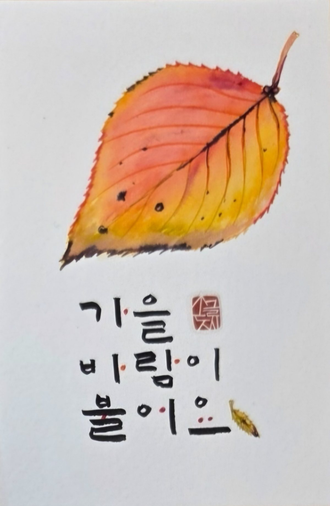

個人の記録 · 2026
子どもと過ごした日々を、
一頁ずつ残しています
子育ての中でふと過ぎていった気持ちを文章にして、週に一度は筆をとって書を残します。上手くなくてもかまいません。ここは誰かに見せるための場所ではなく、あとで私たちが読み返すための記録だから。
01 — 育児日記
小さな人と過ごす日々の記録
何でもない一日の中から、長く残りそうな場面だけを短く書きます。静かすぎた朝、答えられなかった質問、いつもより長く握っていた手。

02 — 毎週の書
週に一枚、ゆっくり書く
月曜の稽古で描いたものと、それに添えた短い言葉を、週に一枚ずつ残します。

가을 바람이 불어요 — 秋風が吹いています
はがき · 水彩のにじみ · カリグラフィー
月曜の稽古では落ち葉を描き、その下に秋の言葉をひとつ書きました。水彩カリグラフィーを習っていて、まだ初級です。はがき一枚にペンで描いて水でにじませ、短い言葉をひとつ書く、それくらいのことです。うまくは描けていませんが、今週の記録はこの一枚になりました。
これまでの作品を見る